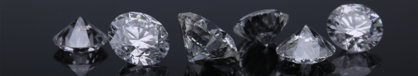

2 Options

Diamond (= Platinum)
This model involves journals that are entirely free to readers and authors. The costs are usually covered by institutions, societies, or other funding sources.
Example journal: Meta-Psychology
Gold
In this model, articles are freely accessible to the public immediately upon publication.
The costs, so called APCs (article processing charges, see below) associated with publishing are typically covered by the author, their institution, or funding agencies.
APCs have to be paid only after the manuscript is accepted. Any other practice, like paying to initiate the review process is predatory publishing (see below).
Example journal: AERA Open (moderate APC)
Green
Also known as “self-archiving” of pre-prints. This approach allows authors to deposit a version of their article in an open repository. The archiving has to be done by yourself.
Some journals impose an embargo period on articles published with them (😒 boo! ). The pre-print cannot be shared before this period has expired.
Hybrid
Journals based on this model are closed, but offer the possibility to “unlock” your individual article, which then becomes open access. APCs for hybrid journals are usually outrageously expensive (😒 boo! ).
Since all the other articles in the journal may still be behind a paywall, libraries may still have to pay a lot of money, as they usually buy entire issues with several articles. In this way, taxpayers pay twice for the process of opening the access to the paper.
Example journal: Computers and Education (not so moderate APC)
more info on…